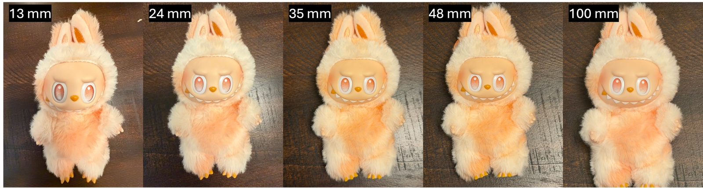
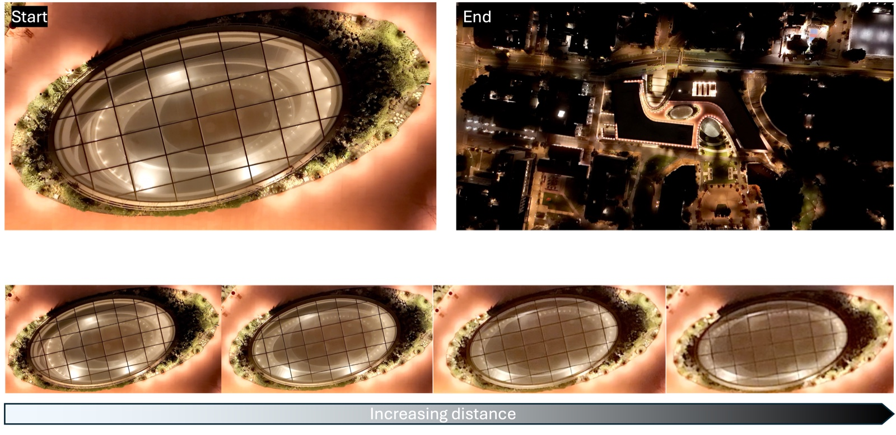
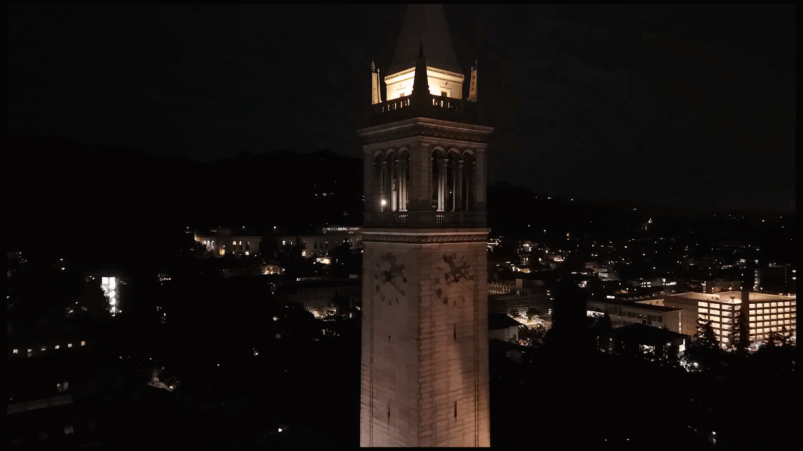
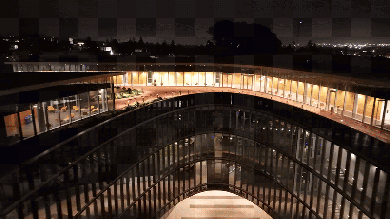
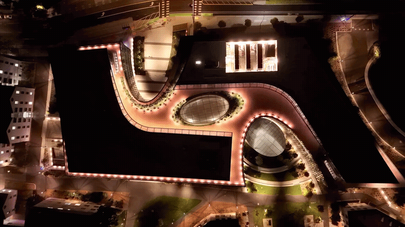

|
Project 0: Becoming Friends
with Your Camera
Brennan Birn — CS280A, Fall 2026
Home
|
Part 1: Selfie — The Wrong Way vs. The Right Way
This is my friend, Mr. Labubu. He finally has a use after sitting on my desk for a year serving
as my monitor deduster — please be nice to him.
I shot this on an iPhone 17 Pro Max, stepping through five of its native zoom settings —
0.5x, 1x, 1.5x, 2x, and 4x — which correspond to the 13mm, 24mm, 35mm, 48mm, and 100mm
labels above. Between the 13mm shot and the 100mm shot I stepped back roughly three to four feet.
The distortion in the close-up comes down to camera placement relative to the surface. As the
camera gets closer, parts of Mr. Labubu that sit off the central axis get projected at a larger
relative scale than the parts near the center — the closer you are, the more that
projection scale changes from one part of the object to the next, so the features nearest the
camera balloon out relative to everything else. Stepping back and zooming in fixes this two
ways: moving farther away shrinks how much the small-scale surface detail (the fur, the
individual features) affects the image relative to the whole frame, so those parts read as
less distorted; and simply being close in the first place is what made the near features claim
more of the screen to begin with, exaggerating their spatial geometry.
|
|

0.5x/13mm (close — "the wrong way") through 4x/100mm (stepped back ~3–4 ft, zoomed in — "the right way").
|
Part 2: Architectural Perspective Compression
This sequence comes from continuous 4K overhead video I shot with my Skyrover X1 over the
Gateway Building. I started directly above its elliptical glass skylight at a close, low
altitude, then climbed straight up to about 400 feet. In Premiere Pro, I cropped in on the
footage and pulled keyframes at increasing altitude to build the Start
→ End sequence above.
The effect is most visible around the oval ring of the skylight itself, where you can see
straight down onto a staircase inside the building. In the Start frame, the staircase is
clearly visible past the edge of the ring; by the End frame it's largely lost. That's a
field-of-view effect: the closer you are to an opening, the more of your screen it takes up,
so you can effectively peer out to the sides at larger angles and see farther down and around
inside it. As you climb straight up, the angle at which you can look through that opening
narrows, so you lose that side visibility — and the same thing happens to every other
object in the frame, which is what flattens and compresses the whole scene at altitude.
|
|

Start (close, low altitude) → End (~400 ft), with four intermediate frames showing the perspective compress with altitude.
|
Part 3: The Dolly Zoom
I recreated the dolly zoom with a drone (a Skyrover X-1) at night around campus, flown well
clear of anyone and in otherwise empty spaces. All three takes are continuous 4K30fps footage,
shot and converted to GIF the same way as Part 2: fly the shot, then crop in and pull frames in
Premiere Pro. For the Campanile take, I started around 175 feet from the tower and flew back
roughly 1,500 more feet while zooming in to keep it framed the same size. For the Gateway
Building facade take, I started closer, around 300 feet, and pulled back to roughly 2,000 feet.
The straight-down skylight take reuses the same climb described in Part 2.
The effect reads best when you start close enough — or with a high enough aspect ratio on
the subject — that the initial distortion is obvious; my drone's fisheye lens helps
exaggerate that even from farther out. The other big effect, which I've seen other people
mention too, is how much the background warps and swells around the subject. Because holding
the dolly zoom means continuously zooming in as you pull back, you're capturing a progressively
narrower slice of the scene — the same field-of-view effect as the skylight in Part 2
— so even though the subject in front stays a constant size, the background behind it
expands outward as the shot continues.
|
|

Take 1 — Sather Tower (the Campanile). Started ~175 ft out, pulled back ~1,500 ft while zooming in.
|
|

Take 2 — Gateway Building, curved glass facade. Started ~300 ft out, pulled back to ~2,000 ft.
|
|

Take 3 — Gateway Building, straight-down view of the elliptical skylight (same climb as Part 2).
|
|